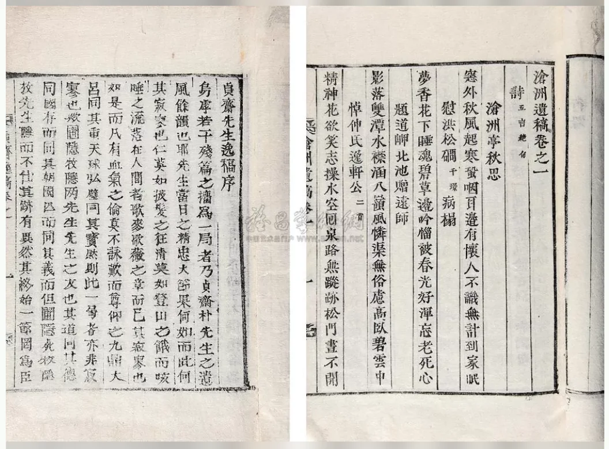

 点击图片可查看大图 · 原始图像 1056×780 px 流拍 朝鲜刻本二种 含《沧州遗稿》一卷、《真斋先生逸稿》三卷 —— 成交记录流拍 估价RMB 4,000-5,000 记录信息 拍卖日期2010-06-02 13:30 拍卖公司北京保利 拍卖专场5周年春季拍卖会 中国古籍文献及名家翰墨 创作年代原表未著录 开本31×20cm 尺寸类型开本 高 × 宽31.0 × 20.0 cm 纸张原表未著录 成交价原文无成交价（流拍） 来源位置Excel 第 41 行